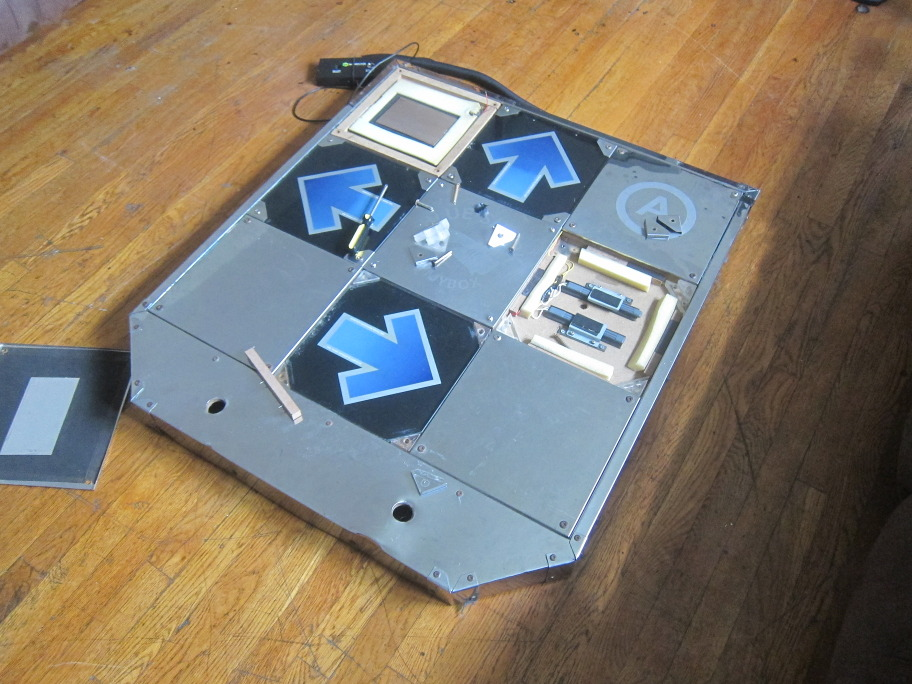
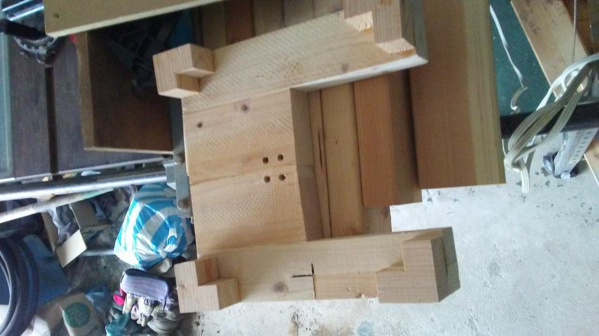
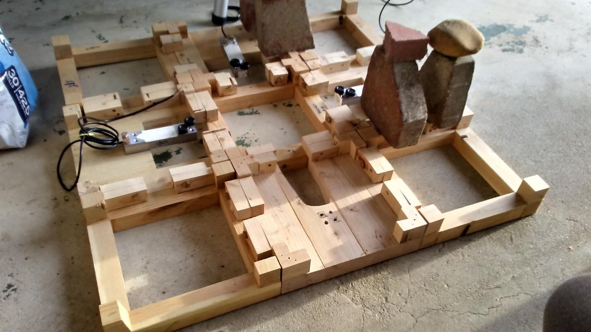
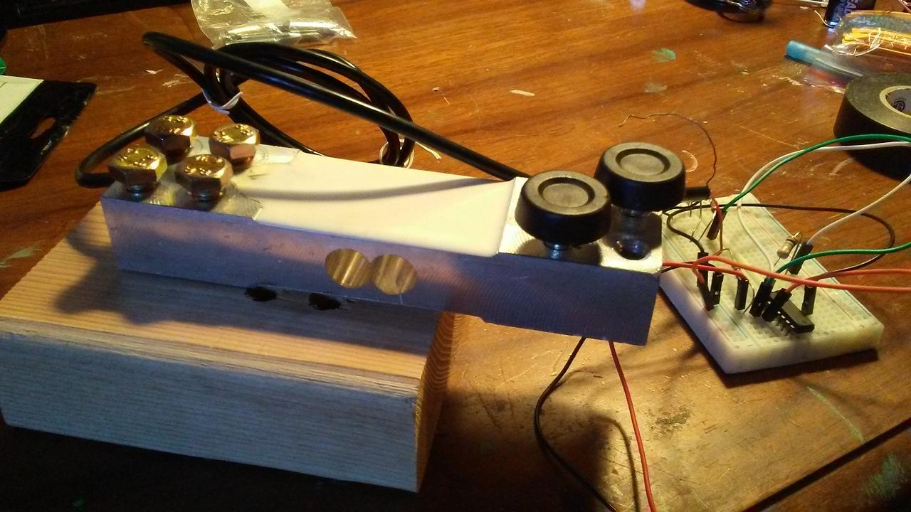
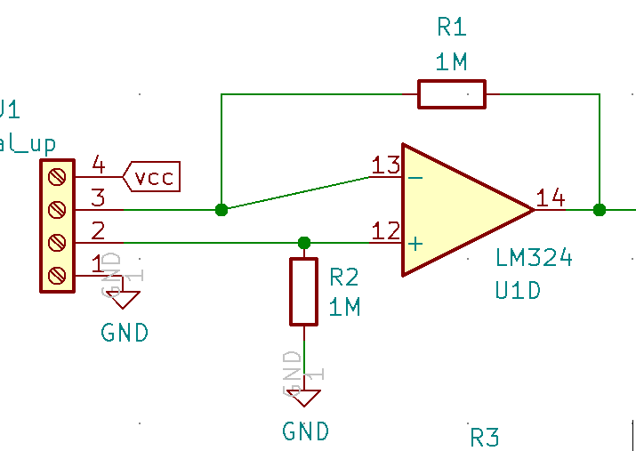
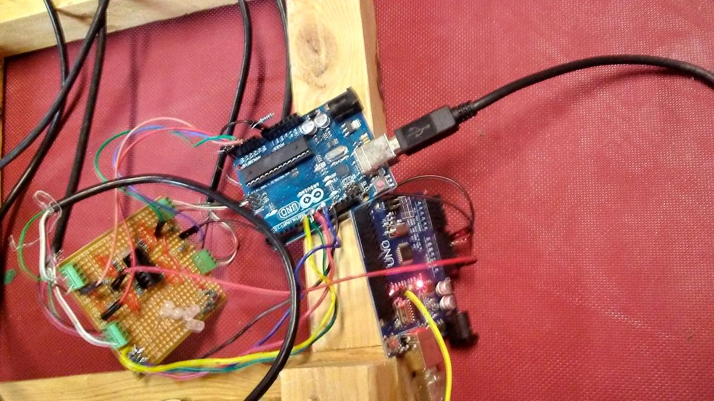
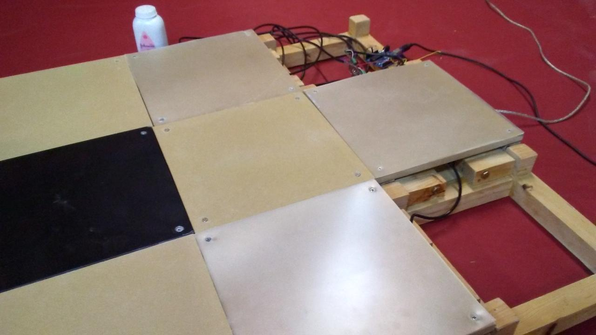
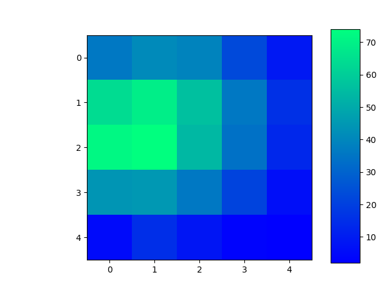

Openpad Build
July 2020
Openpad is a open-source design for dance simulation games like Dance Dance Revolution and Pump It Up. Built with wood, Openpad is a DIY solution to achieve an arcade-like experience while supporting high customization, outperforming most commercial home pad solutions in durability, sensitivity and cost-effectiveness. I present my build below and document my observations and thoughts along the process.
Table of Contents
Introduction
I grew up with an arcade game called Dance Dance Revolution, which was a popular dancing game simulator from 1997. I played the home console version on my PlayStation and cycled through were not well anchored, often drifting during play. Needless to say, the home dance pads paled drastically when compared to hardened arcade pads, built out of rugged metal frames, with welded support bars, with 1-inch thick acrylic panels and diffused lights to light up the dance floor. For most people, purchasing the real arcade game itself was out of the question.1
However, with the development of free-as-in-freedom software simulators such as the legendary Stepmania, along with proliferation of fan-made content, simfiles, which have spread.2
Building arcade-style pads from scratch requires some labor but is feasible for an individual equipped with a modest tool set and skill set. It is a worthwhile endeavor to design work around functionality, durability and price constraints.

Maybe in the future, I will discuss discuss a teardown of this Blue Shark
There do exist commercial “hard” dance pads that attempt to replicate arcade pads. Historically, two of the top-tier products include the Cobalt Flux pads and Blue Shark pads, both which are no longer manufactured and only available from second-hand markets. Presently, they are mid-tier products at a mid-range price point but inferior in quality or sensitivity or maintenance in one way or another. The old foam pads I had from DDRgame fall into the classification of mid-tier pads. Arcade-style StepmaniaX (SMX) pads are acquirable for new, although they are pricey (US $1400+shipping) and notoriously out of stock.3
The primary goals for this build is to:
- Support High level play (highly sensitive panels)
- Support USB host for PC interface
- Be as cheap as possible
As with any ‘'cost-efficient’‘ project, the pad was built up from the materials available at hand or the cheapest possible materials available at the local hardware store. This contrasts to a typical engineering workflow in which you begin with a design, then specify a BOM (Bill of Materials), prototype and iterate.
As a consequence of the primary goals, major design choices followed naturally:
- Wood is the material of the frame and panels
- Analog sensors for software-defined sensitivity
- Arduino for microcontroller
The source code and documentation needed to reproduce this project is available on the Openpad project on Github originally pioneered by finalarcadia. While finalarcadia made a build for Pump as well but here I only provide the build for 4 panels. My forked branch includes an additional PCB design and small changes. My design differs mostly in the use of modular panels, more sensitive sensors registration and more cost-effective circuit.
Frame
Metal is expensive. Metalworking tools – also expensive.4 Wood? Cheap. A used miter saw from craigslist? $40. My good friend, KJ helped draft some designs in CAD. Inspired by games Arrow Vortex and Technomotion where all 9 arrows in the 3x3 grid were used in gameplay, a modular design which each a square would be a self-contained and attachable unit was designed. The idea was if we wanted, we could re-arrange our sensored panels in order to play Pump it Up or any other dance game!

Why not build a universal controller to play all these great games
The material of choice is 2x4 pine lumber, available in any US hardware store for as about as cheap as wood can get. The measurements in the design were not sized to 2x4 very well, thus numerous cuts were made to get the wood to shape! A rather generously thick base was made by gluing four 2x4 beams together. Since 2x4’s are meant to be used in constructing buildings, it has rather rounder edges which I shaved off with the table saw. More wood scraps! In retrospect, it would have been better to modify the design to reduce the cuts needed.

Old school DDR and PIU pads used two diagonal screws to secure the panel
Building the individual modules became very monotonous and I almost injured myself twice while zoning out and neglecting safety. Exactly 9 squares brackets with glue butt joints holding everything together. I was also sloppy with gluing and the panels weren’t completely level with the floor. This would become an issue later when you string the pad together!
Alignment is a big issue when dealing with modular blocks so I built the alignment blocks first, then glued then on while they were already coupled using heavy stones and bricks to clamp. There are two M6 screws used to hold each edge of the module. Threads were tapped directly into the thin wooden alignment blocks. This is fine when the pad is flat but when you hold the pad vertically, it is slightly wobbling at several joints. In my mind though, disassembly for transporting was an important feature at the time.

The first module made. This one looks much better than the rest. Note the mounting holes for the sensors are tapped for M6 bolts, the same hole size as the sensor

Attaching the alignment blocks. Notice the use of bricks for clamping. Note the sensors are tapped straight into the base
Electronics
Sensors
Up to this day, DDR and PIU have used rubber digital sensors that are actuated by a metal bracket underneath the acrylic panel. The bracket only allows vertical motion to be registered. Pad maintenance will inevitably require padding the space to change sensitivity thresholds.5 A new approach by the StepmaniaX team is their use of analog sensors: load cells or strain gauges that can detect minute tension or compression in the metal structure itself! The sensors used in StepmaniaX and this project are beam shaped, which allows you to mount the panel on the other side of the beam. I used some rubber feet to hold on the panel and also allows for adjusting of tension.

Testing the load cell circuit
Because the load cell uses a Wheatstone bridge, the output of the signal is in microvolts, too small to be measured by any microcontroller. We need to use a amplifier to do the job. Here I use an opamp (which one?) that has four op amps.
Why use a analog sensor? Because it allows you to configure arbitrary sensitivity in software! At least so goes the theory. The panels ended up being a little too sensitive! The sensors would sometimes register force from a diagonal module due to lateral forces from the frame’s uneven construction. Sometimes, just standing on the center panel can trigger the other arrows! A temporary fix is to recalibrate and rezero the sensors while standing on the center panel.
I ordered the load cell sensors from various chinese suppliers through ebay. They’re rather heavy and have a pair of 2x2 M6-threaded holes for mounting.
Circuits
The connections on a bread board were to shaky for me so I went straight to the protoboard. Screw-in terminals were used for the analog input signals. The internal resistance of my 200kg sensors are about 50Ω (U-03A9). My DAC has 10 bits in the range of 0-5V giving about 5/210 = 4.8 mV sensitivity.
Now we need to talk about the expected pressure we intend to measure. The average person in the world weighs 62 kg.6 Assume that a person when standing, the weight is distributed evenly between the legs. For the purposes of a dance game, we can also assume that less than half of the weight is used to register a panel. Let’s just say I want a We need sensitivity of 0.1 / 200 * 5V = sensitivity of 100g to register. We need sensitivity of 0.1 / 200 * 5V = 2.5 mV is the maximum raw sensor threshold. This is clearly not enough to be picked up by the DAC alone. We need an amplifier to read the signal.
A simple negative-feedback configuration with matched resistors of 1MΩ is used to achieve a gain of …

Finalarcadia used 4 instrumental op amps (INA125P) which cost ~$6 each on Digikey. I opted instead for a single LM324 which is only $0.48. Using resistors of 1MΩ gives about a gain of 200 which is more than enough. Instrumental amps are just double staged op amps (3 for one) that offer lower noise itself, but my setup seems to work.
Of Noise and Entropy
Because we’re designing an analog circuit we need to minimize our analog noise which our microcontroller will read! Following standard analog design here wise. So make sure your sensors are shielded and your 5V clean. Keep wires short as possible. Another option is to use RC time constant to filter out noise but that could introduce delay. Design a PCB and use bypass capacitors – use a function generator and oscilloscope to verify clean switching in your DAC.
Disclaimer: Actually, I didn’t do any of those things and my pad works great.
Microcontroller
Arduino is cheap and easy to program. The Arduino Uno (ATmega328 chip) is not powerful enough to support USB profiling by it’s own so you need to reprogram the side ATmega16u2 chip to use the secondary chip as a USB host. Unfortunately, the latency is quite high for input (~50ms) and debugging a chore. To switch between a keyboard and programmer function, you need to short a jumper pin and reconnect the USB every time. A more powerful Arduino Leonardo or even the Pro Micro or Pico is recommended.
It is wise to add LED indicators as debugging via the Serial console can prove annoying. Nothing like realtime visual feedback.

You see two arduinos here because one of them is just providing power. I think there shouldn’t be a need for this but USB limits to 100mA by default and my op amp may draw up to 50 mA of power. The arduino board itself also needs 50 mA so it’s a close call and I was definitely having stability issues where only a subset of the op-amps worked when everything was powered through my laptop. The use of arduino pro micro or nano will have lower power footprint than the uno.
Assembly

The panels were hand cut from a old projector TV. The plastic itself was only 1/32 “ at most so I supplemented it with ¾” of MDF. Alternatively, ¾" acrylic panels or ½" polycarbonate sheets and cut them on a bandsaw. It turns it it actually hurts to play bare foot.
Final Impressions
Not bad for a first prototype. The whole design needs a reworking but I can perform just as well if not better than on my old foam pads. Some points taken:
- Modular design needs more precision
- USB power considerations for circuit (typ. 100mA)
- probably should get a safer table saw
- Use 4 smaller 20kg sensors instead of one big 200 kg sensor
On that last point, I have here a heat map of my Right panel readings. A gallon of water was placed at 2 inch intervals on a panel. You can probably guess where the tip of the sensor is residing. It’s not perfect. The raw values are taken straight from the DAC in signed integer from -512 to 512. The pads are of course zeroed so no weight is registered as zero.

A rebuild is definitely in the planning as I’m hoping to create another pad for the purpose of playing doubles or versus!
Future Work
There is a lot to do! New Features I want to add:
- Lighting (externally powered LED’s)
- Thinner, flexible transparent panels with better mounting onto frame
- Proper PCB
- Just use the better arduino
Appendix
Links
- Github Source
- Wheatstone Bridge & Load Cells on Wikipedia
- Stepmania and user packs
- Technomotion Ghetto.io interface on github useful bits on ddr/piu here too!
- HackMyCab, a guide on modding and maintaining DDR machines
- one only needs note its limited availability on second-hand markets, its still high price point, its dead-heavy weight, its voluminous spacious body, its 1000W energy hogging power supply, and its additional maintenance costs to reconsider).If you ever try moving a single 100kg pump it up pad up and down a narrow staircase? It has no places to grip and really awkward.↩
- These simfiles are of course, shared pretty much without concern for “digital rights” /s↩
- The StepmaniaX development team has a long and complicated history with DDR when it released ITG in 2005. What’s notable about the SMX pads themselves is they feature an additional center arrow, but it’s modular design allows for quick swapping.↩
- So not quite. But for this project, you would want thick beams and welding. It will probably be more expensive. I also know next to nothing about metalworking.↩
- Arcade pads are commonly ‘tape-modded’ or penny-modded to achieve the same effect. It works well but can be prone to fluctuate.↩
- This paper approximates weights in the world↩